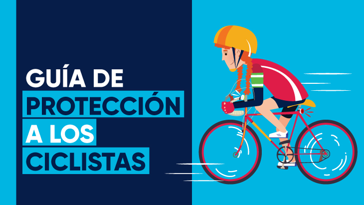

Prevención
• Registra tu bicicleta, es obligatorio en Bogotá y en caso de hurto es más fácil recuperarla.
• En horas de la noche y en la madrugada, intenta rodar en tu bici con amigos o colegas que vayan en el mismo trayecto.
• Transita por rutas iluminadas que tenga presencia de personas y establecimientos abiertos.
• Debes estar atento en la vía y en el entorno de tu recorrido; es lo más importante. Si ves algo sospechoso podrás reaccionar mucho más rápido.
• Planea tu recorrido con un grupo de amigos y avisa de tus trayectos a tus familiares.
• Vincúlate a las redes de comunicación #BiciRedes de la Policía Metropolitana de Bogotá, donde podrás reportar hurtos a bici en tiempo real.
• Recuerda informar de alguna situación sospechosa que se presente en tu recorrido en el CAI más cercano o en la uno de los grupos #BiciRedes.
• Informa a la alcaldía local o a tu consejera (o) local de la bici, si la iluminación y los tramos de ciclorruta necesitan mantenimiento.
• Si eres ciclista recreodeportivo, rueda con amigos y procuren contratar una compañía de acompañamiento en moto o carro. Esto reduce el riesgo de un siniestro vial o un hurto.
• Mantén tu privacidad, ¡privada! Por cuenta de la tecnología GPS y el uso de aplicaciones como Strava, Garmin, entre otras, le puedes estar anunciando al mundo de tus recorridos (a donde vives y si tienes una bicicleta de alta gama). Para prevenir que te perfile un delincuente por medio de las plataformas con GPS, es importante configurar un búfer de privacidad en todas tus aplicaciones de seguimiento de actividad física.
• No portes armas. Está prohibido y te pueden agredir con la misma arma.